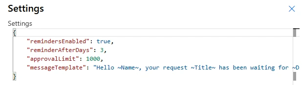

- Power Automate
- Level 8 · Real-world patterns · 6 of 8
Configurable templates and feature flags
A flow is easier to maintain when the values people want to change (a limit, a reminder delay, the wording of a message) live outside the logic. Put them in one settings object, read it at the start of the run, and use it everywhere.
Settings from a JSON environment variable
The demo reads a JSON environment variable (see Environment variables in Level 6):


outputs('Settings')?['remindersEnabled']| Piece | What it does |
|---|---|
outputs('Settings') | The settings object, read once at the start. |
?['remindersEnabled'] | A feature flag: set it to false to switch reminders off without changing or turning off the flow. |
Where to keep settings
| Place | Good for | Changed by |
|---|---|---|
| JSON environment variable | A handful of values that differ per environment | An admin, per environment |
| SharePoint "Settings" list | Values the business owns, such as message wording or limits | Business users with access to the list |
| Child flow "Get settings" | Many flows sharing the same settings | One place, read by every flow |
The child-flow option suits larger solutions: one small flow reads the settings (from a list or environment variables), returns them as JSON, and every other flow calls it first. Changing the source, say from a list to Dataverse, then touches one flow, not twenty.
New to this? Start from the basics optional
Feature flag: a true/false setting that turns a part of the flow on or off.
Template: text with placeholders like ~Name~ that the flow fills in (see Text functions).
Build it step by step optional
- List the values that might change: limits, delays, recipients, wording, switches.
- Create a JSON environment variable (or a settings list) holding them.
- Add a Compose named Settings at the start of the flow that reads it.
- Replace every hard-coded value with
outputs('Settings')?['name']. - Wrap optional features in a Condition on their flag.
Common mistakes
- Reading the settings list inside a loop. Read it once, before the loop.
- No default when a setting is missing. Use
coalesce()with a safe value. - Storing secrets in settings. Use a Secret environment variable with Azure Key Vault.